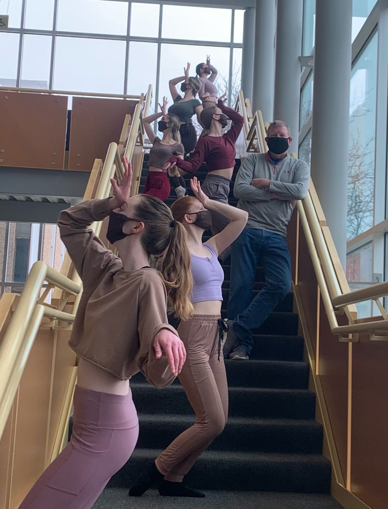

ROTOSCOPING FOR DANCE

For Illinois State's Virtual Spring Dance Concert I did rotoscoping for the piece ‘Look for the Light!’ by Greg Merriman. I was also fortunate to dance in this piece for my dance minor under the School of Theatre and Dance. This was a collaboration with the school of Creative Technology under my Motion Graphics class. My intention was to emphasis the dancer's arms as the choreographer wanted to emphasis that part of the upper body since our faces were covered due to Covid-19.